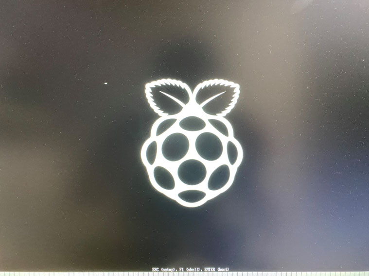
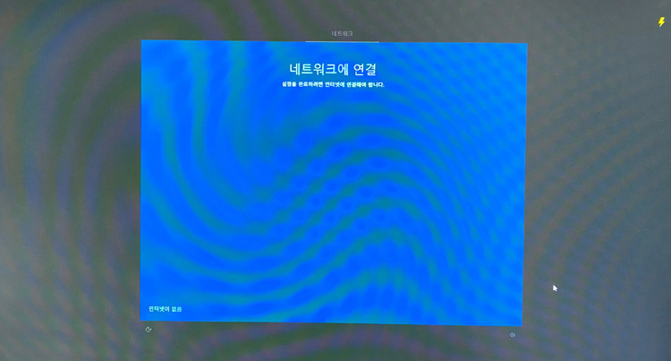

라즈베리파이 4B에 WINDOWS 10 ARM64 설치하기
라즈베리파이 4B에 WINDOWS 10 ARM64 설치하기
안녕하세요. AkibaTV입니다.
이번에 소개할 내용은 라즈베리파이 4B에 WINDOWS 10 ARM64 설치하기 입니다.
아직 ARM계열에 정식으로 설치파일이 아니기에
여러가지 문제점이 많이 발생하고 있으며 설치과정도 어렵기때문에
여유가 있으신 분들만 도전하시길 추천 드립니다.
주의 사항
전면 (USB3) 포트는 여전히 지원되지 않으므로 이 안내서에서는 Type-C 플러그를 통해 사용 할수있는
“레거시” DWC2 USB 컨트롤러용 MCCI 드라이버를 사용합니다.
DWC2 드라이버의 한계로 인해 Windows 10은 1GB의 RAM 만 사용할 수 있습니다.
준비물
- 최근 Windows 10 빌드가 설치된 PC
- 마이크로 SD 카드 리더기
- GPIO 핀을 통해 Pi에 전원을 공급할 수 있는 경우 Type-C 마이크로 USB 어댑터 또는
Type-C 마이크로 USB 어댑터를 사용하여 마이크로 USB 허브에 전원을 공급할수있는 경우
Powered type-c USB 허브 또는 Type-C OTG 케이블- USB 마우스 및 키보드
- 16GB 이상의 마이크로 SD 카드 – 클래스 A1 또는 A2
- 라즈베리파이 4B
- 마이크로 HDMI 케이블
- 전원 공급 장치 (5V 3A +)
다운로드
https://uup.rg-adguard.net/에서 arm64 용 Windows 10 설치 파일을 다운로드 하십시오.
OneClick으로 ISO 컴파일러를 다운로드하십시오
다운로드 한 CMD 파일을 실행하십시오 (ISO.cmd 파일 작성 실행)
또는 aria2를 사용하여 https://uupdump.ml/를 통해 다운로드 하고 aria2_download_windows.cmd를 추출한 후 변환하십시오.
이러한 서비스 중 하나를 사용하면 ISO 파일을 생성하는 데 도움이되지만 ISO의 소스 폴더에서 install.wim 파일만 필요합니다.
문제없이 OOBE를 통과하는 모든 빌드는 괜찮습니다.
CMD파일을 실행을 하시면 위와같이 나오게 되면 실행을 눌러주시기 바랍니다.
CMD창이 열리며 다운로드 준비를 하게 됩니다.
위와같이 같이 나오게 되시면 그냥 엔터를 치면 됩니다.
그러면 위와같잉 무언가 열심히 다운을 받게 됩니다.
다 받아질때까지 기다려주시면 되겠습니다.
다운로드가 완료되면 아무키나 누르시면 종료가 됩니다.
위의 과정이 끝나시면 WOR (windows on raspberry)를다운로드 해주세요.
WOR 사이트 https://worproject.ml/downloads 에서 (2.0.0-alpha.3)을 다운로드 해주시기 바랍니다.
설치하기
위의 사항이 모두 완료 되셨으면 다음의 사항을 진행해 주시기 바랍니다.
다운받으신 WoR을 실행을 해주시기 바랍니다.
언어선택
프로그램을 처음 실행하시면 언어를 설정하실수 있습니다. 언어를 선택후 다음버튼을 눌러주세요.
장치 선택
장치 선택 목록에서 SD 카드를 선택하고 사용할 장치로 Raspberry pi 4를 선택해 주시고 다음을 눌러주세요.
이미지 선택
CMD를 이용해 생성한 Windows ISO 파일을 선택하시고 다음을 눌러주세요.
드라이버 선택
서버에서 사용가능한 드라이버 패키지 사용하기를 선택하신후 다음을 눌러주세요.
UEFI Firmware 선택
서버에 저장된 UEFI 펌웨어 파일 사용하기를 선택하시고 다음을 눌러주세요.
환경 설정(변수)
MBR이 파티션 구성표로 선택되어 있는지 확인하시고 기본설정 그대로 두고 다음을 눌러주세요.
설치
설치정보를 확인하시고 문제가 없을경우 설치버튼을 눌러주시기 바랍니다.
설치가 모두 완료 되었습니다. 마침버튼을 누르시고 마이크로 SD 카드를 안전하게 제거하고 Raspberry Pi에 삽입을 해주시기 바랍니다.
Windows 10 구동
라즈베리파이에 USB 키보드, 마우스를 연결하시고 전원을 넣고 구동을 합니다.
여기서 주의점은 USB는 C Type형으로만 전원과 키보드, 마우스를 사용하실수가 있습니다.
처음 부팅은 마이크로 SD 카드의 속도에 따라 12분에서 2시간 정도가 걸리게 됩니다.
라즈베리파이 4B에서 윈도우를 구동시에 발열이 많이 발생을 하기에
쿨러는 쿨링효과가 좋은것으로 다는것을 추천 드립니다.

구동을 하게 되면 라즈베리파이 로고가 나오며 구동이 됩니다.
윈도우 로고가 나오며 서비스를 시작하는중이 뜨게 됩니다.
여기까지가 20~30분정도 걸리게 됩니다.
그리고 나서 재부팅이 됩니다.
재부팅되며 다시 라즈베리파이 로고가 나오게 되며
윈도우 로고가 나오며 드디어 초기 설정으로 진입을 하게 됩니다.
지역(한국)을 선택을 하시고 예 버튼을 눌러주세요.
자판배열을 선택하라고 나오게 됩니다만 기본으로 선택후 예 버튼을 눌러주세요.
레이아웃을 추가할수 있습니다만 저는 건너뛰기를 했습니다.

네트워크 연결입니다만 랜케이블을 연결을 해도 네트워크에 연결이 되지 않기때문에
인터넷이 없음을 눌러서 건너뛰시기 바랍니다.
인터넷이 안되기에 제한된 설치로 계속을 눌러주세요.
문제의 구간입니다만 여기서 다시시도를 눌러서 되시는 분들이 있거나 저처럼 몇번을 시도를 해도
안되는 경우가 발생을 하게 됩니다.
저는 더 안정된 버전이 나올때까지 보류를 하도록 하겠습니다.